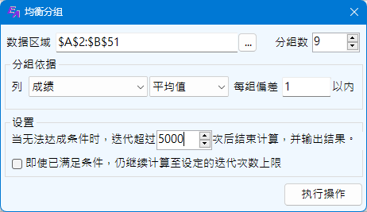

均衡分组
Excel助手Ribbon菜单中数据操作部分点击均衡分组按钮即可调出如下操作界面，该功能主要用于将数据，根据其中的某一字段的统计值进行均衡分组。 例如，将100个学生，按照成绩分为3组，并且要使每组的平均成绩大致相当。
|  |
数据区域 要用于分组的数据，选择数据时，不要包括标题行。 分组数，即要将数据分成的组数，程序会自动将每组的数据均衡，如能等分，则等分；如不能，则任意两组数据数目相差1个。 分组依据 选择一个列作为分组依据，选择一个统计值，统计值暂只支持平均值、中位值、和、标准差四类。偏差为每组统计值相差的范围。 |
程序分组的原理为：将数据排序，并分配到每组内，然后挑拣统计值相差最大的两组进行数值交换，直至交换后的统计值差值小于交换前，则完成一次迭代，并检查是否满足偏差要求。如不满足，则继续迭代，直至设定的迭代次数上限。
注意：
1. 设置迭代上限是为了程序可以有效完成，避免出现死循环，但鉴于本程序的算法，多次迭代的结果不一定相同。所以，尽可能的尝试更大的迭代次数，通常可以获得符合要求的结果。
2. 偏差值的设置，需要考虑数据的特点，当设置的偏差值，经过很大的迭代次数及很长时间的计算，仍不能得出满足需求的分组，则可能数据根本就不存在满足条件的分组，应适当调大偏差值再尝试。
3. 虽然提供了忽略偏差条件，继续迭代至设定的上限的选项，但即使迭代计算至最后，最终结果未必是满足条件的。
4. 本程序在读入数据时，对数据敏感性很大，且会将非数值的数据当0读入，因此统计时会产生较大影响，使结果不可预料。因此应尽量保证数据的完整性。
示例： 以平均成绩为依据进行均衡分组。